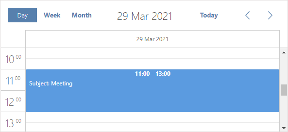

To achieve the desired look for the scheduler, the library provides 3 objects:
Besides, dhtmlxScheduler contains a number of extensions that will help you enable additional functionality in the component.
The library provides a big number of configuration options which are declared in the scheduler.config object.
To set the desired option, just write it as it's stated in this documentation (or change scheduler to the name of a dhtmlxScheduler instance if you have multiple schedulers on the page).
Beware, configuration options should go before the code line with scheduler initialization.
scheduler.config.first_hour = 8;scheduler.config.last_hour = 17;scheduler.config.start_on_monday = true;scheduler.init('scheduler_here',null,"week");
See the full list of the scheduler.config properties in Scheduler API: Properties.
Related sample: Multi-day events
Templates can be used to change displaying dates and titles in the scheduler.
To define a template, just write it as it's stated in this documentation (or change scheduler to the name of a dhtmlxScheduler instance if you have multiple schedulers on the page). Remember, definitions of templates should go before the code line with scheduler initialization.
scheduler.templates.event_text = function(start,end,ev){ return 'Subject: ' + ev.text + '';};scheduler.init('scheduler_here',null,"week");
We strongly encourage you to redefine templates within a handler function of the onTemplatesReady event, as it ensures that your template won't be rewritten with the default one

See the full list of available templates in the Scheduler API: Templates.
Related sample: Styling events with templates
The properties of the scheduler.xy object will allow you to set widths, heights, shifts of scheduler's elements in different views.
To set the desired option, just write it as it's stated in this documentation (or change scheduler to the name of a dhtmlxScheduler instance if you have multiple schedulers on the page). Beware, size options should go before the code line with scheduler initialization.
scheduler.xy.scale_height = 40; //sets the height of the X-Axis scheduler.init('scheduler_here',new Date(),"month");
Note, all the xy' properties have the data type 'number'.
Related sample: Customizing the scheduler header
There is a number of extension code files that can be included into the page to provide special possibilities for the Scheduler component. For example, you can include the dhtmlxscheduler_cookie.js extension that will allow saving the current state (mode and date) of scheduler in cookies.
<script src="../codebase/ext/dhtmlxscheduler_cookie.js"></script>Related sample: Work with cookies
See the list of the Scheduler extensions in the article Full List of Extensions.
Back to top